The Python programming language is currently characterized by an enormous and rapidly growing “ecosystem” of
software tools that support the analysis and visualization of “Big Data,” datasets that are too large or
complex to be dealt with by traditional data-processing methods. Examples include Numpy (numerical
computing), pandas (data manipulation), matplotlib (visualization), and tensorflow (machine learning). With the huge and increasingly complex
volume of data that large-scale High Energy Physics (HEP) experiments
produce, a complete HEP
data analysis workflow can provide great benefits.
In this project, we explored different Python-based
approaches to deal with the
standard ROOT format common to all HEP data. With reference to a representative HEP workflow taken as use case,
we measured the performance of Uproot, a
library for reading and writing ROOT
files in pure Python and NumPy, and of RDataFrame, the modern ROOT's
high-level interface for efficient data
analysis. To match the performance of a traditional C++ ROOT workflow, we also adopted parallel processing in
our study.
Data and computing resources
The ROOT files used in our study, which have a total size of about 128GB, were taken from CMS Open Data.
Measurements were run on three different machines on the ReCaS-Bari computing center:
wn-gpu-8-3-22 (256 CPUs, ~2000 GB RAM)
wn-1-8-9 (64 CPUs, ~250GB RAM)
tesla04 (32 CPUs, ~250 GB RAM)
For the first two machines, data could only be stored remotely on the computing cluster, while on
tesla04, it
was possible to access the data on the local disk.
tesla04 was also the only computer on which we could install the latest version of ROOT (6.26).
To make fair comparison between different computers, therefore, all measurements were run with ROOT 6.24 unless
otherwise specified.
Analysis task
Specifically we measure the total runtime of the sequence of the following operations:
accessing the TTree inside the input ROOT files;
applying specific filters (selection criteria) on the variables stored in the TTree, in order to extract a
known physical signal associated to the decay chain of a beauty meson (B0s → J/psi phi, J/psi→mumu, phi→KK);
converting the TBranch containing the selected invariant mass to a NumPy array for further analysis task
(signal fitting, etc ...).
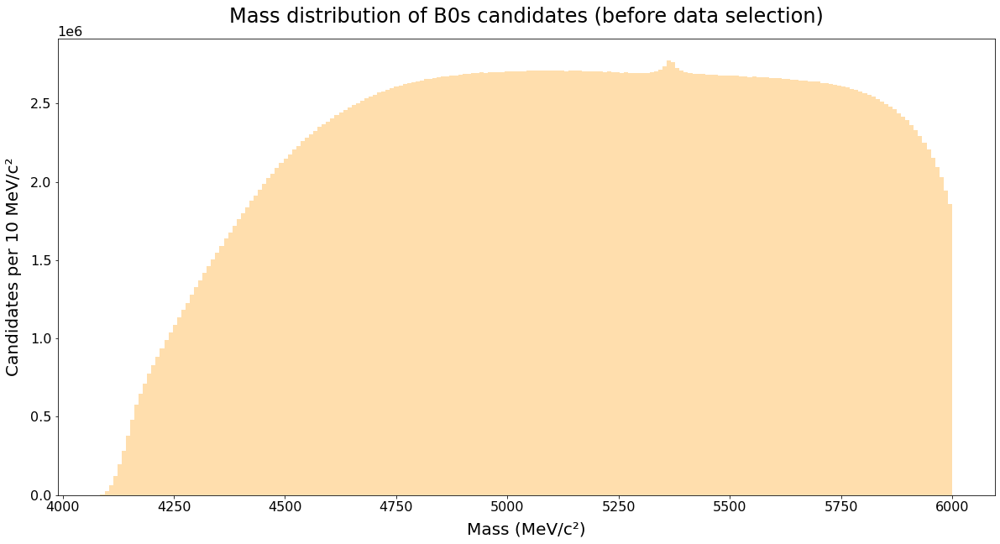
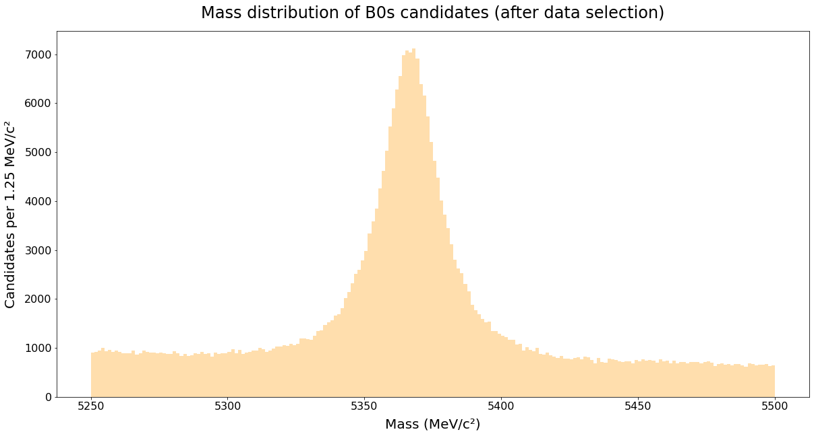
Parallel processing
Instead of letting one CPU handle the whole dataset, we used multiple CPUs running in parallel to process pieces
of data concurrently.
Without parallelism, the time it takes to complete the analysis task would be:
\[T = t_u\cdot S\]
Where T is the total run time, tu is the time to process one unit of data, and S is the size of data.
By implementing parallel processing, this equation becomes:
Where C(S, P) is the time to access/split/merge the data and P is the number of concurrent processes. The
fraction
S/P is rounded up to make sure that no data is lost.
Parallel processing with Uproot
Uproot does not provide a built-in option for implicit parallel processing. To enable parallelism, therefore,
we manually split the data into smaller chunks and then created subprocesses with Python’s multiprocessing
module to handle them. Since Uproot allows users to specify the number of events to be processed in each TTree,
the smallest unit of data assigned to each subprocess is one event. As a result, data can be distributed
very evenly among subprocesses, and the runtime function for Uproot would be:
Where te is the time to process one event, and Se is number of
events in the dataset.
Parallel processing with RDataFrame
RDataFrame, on the other hand, has a built-in option for implicit parallelism: EnableImplicitMT(). However, it
appears to work inconsistently on different machines and different ROOT versions.
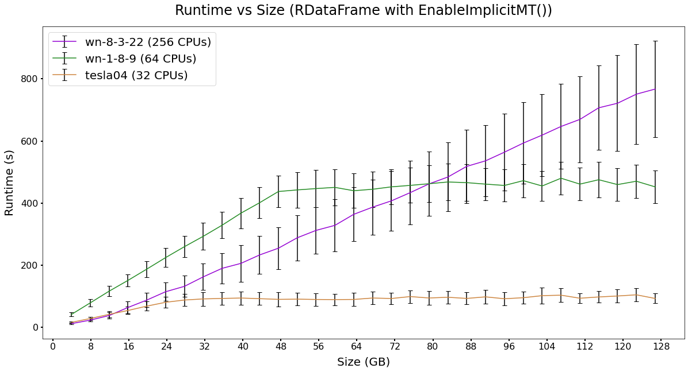
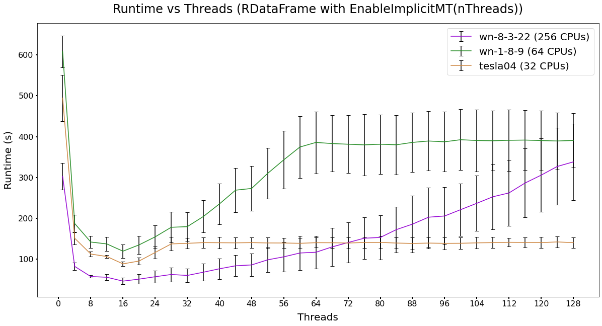
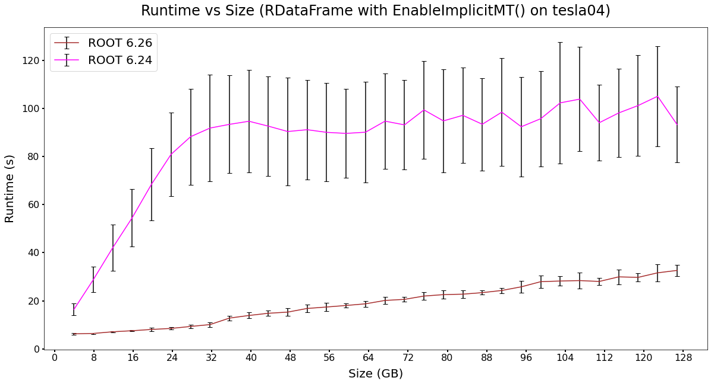
Parallel processing with RDataFrame
Alternatively, we followed the same approach mentioned above: explicitly creating subprocesses to handle pieces
of data. Unlike Uproot,
RDataFrame doesn’t provide the option to specify the number of events to be processed in each file, so the
smallest unit of data distributed to each subprocess is one
file. As a result, the runtime function for RDataFrame would be:
Where tf is the time to process one ROOT file, and Sf is number of
ROOT files in the dataset.
If the files had different sizes, tf would vary, making it difficult to understand the performance of
RDataFrame. To prevent this, therefore, we split the original dataset
into 128 files of the same size. For a fair comparison, we used these files as input for both Uproot and
RDataFrame.
Results - Local and remote access
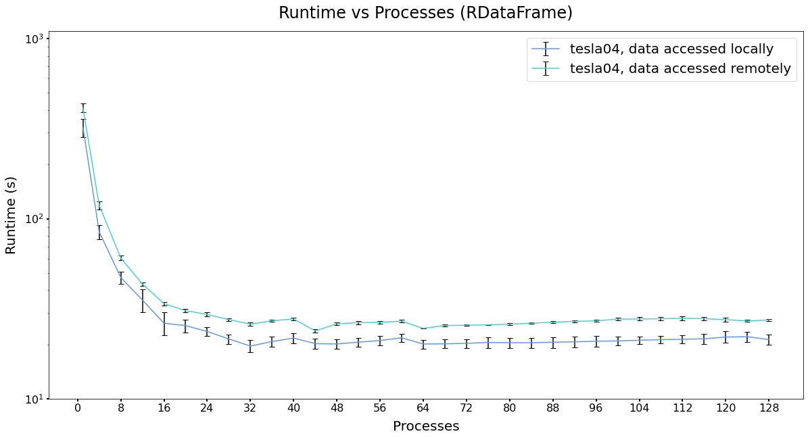
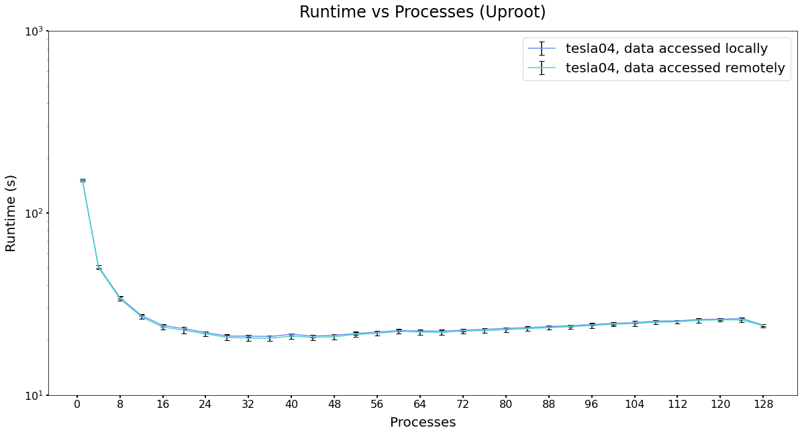
We found that accessing the data on local disk resulted in an insignificant increase in
performance. In all subsequent measurements, therefore, data were always accessed remotely.
Results - Runtime vs Processes
By keeping the size of data constant (128 files/128GB/4.5 · 108 events) and varying the number
of processes (at 1 process, there is no parallelism), we
obtained the following results:
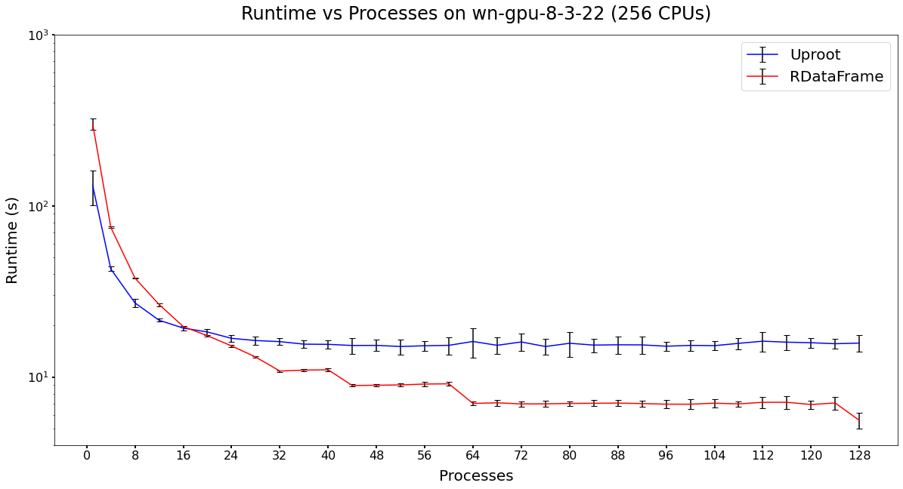
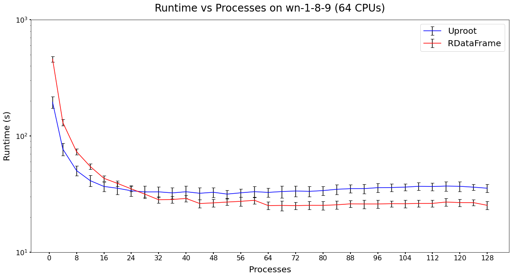
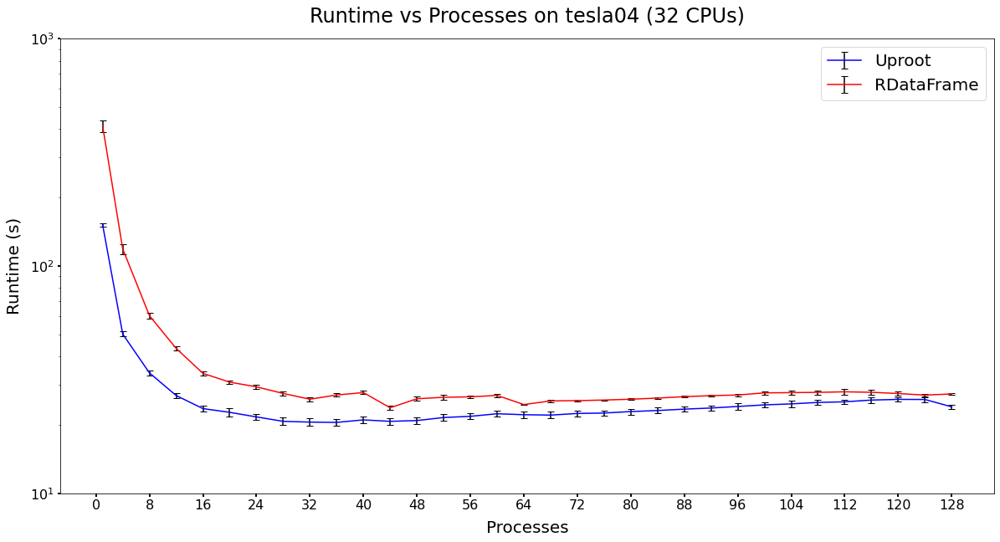
The plots, which show that runtime is inversely proportional to the number of process, are consistent with the
runtime functions mentioned above, as we found in other tests that the time C(S, P) is constant. While the
curves of Uproot
are fairly
smooth, we can see a discrete pattern in RDataFrame's plots. This reflects the fact that RDataFrame's smallest
unit of data is one file, which is much greater than Uproot's smallest unit of data (one event).
Results - Speed-up vs Processes
From the previous plots, we can calculate how much speed-up we gained by using parallel processing. Speed-up at
n
processes is the ratio between the runtime at 1 process and the runtime at n processes.
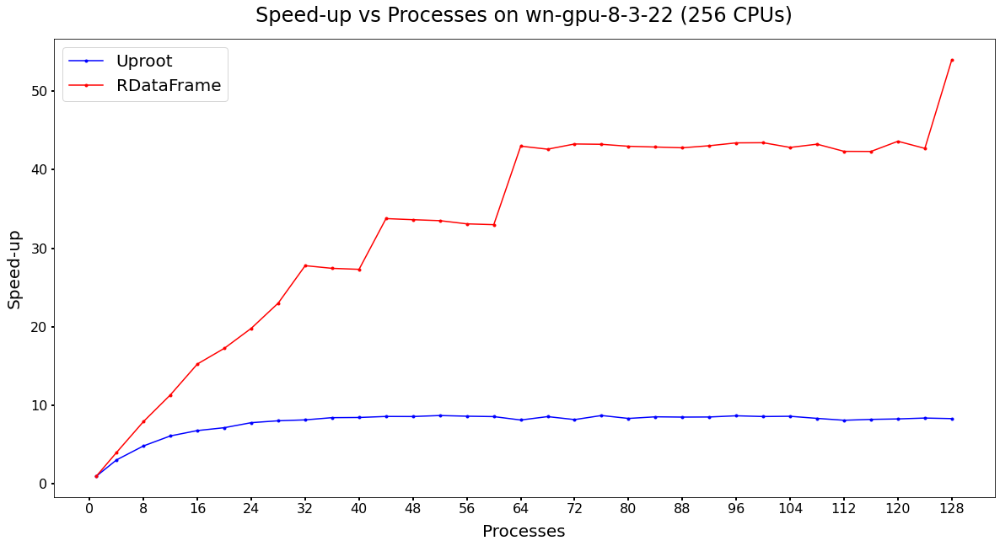
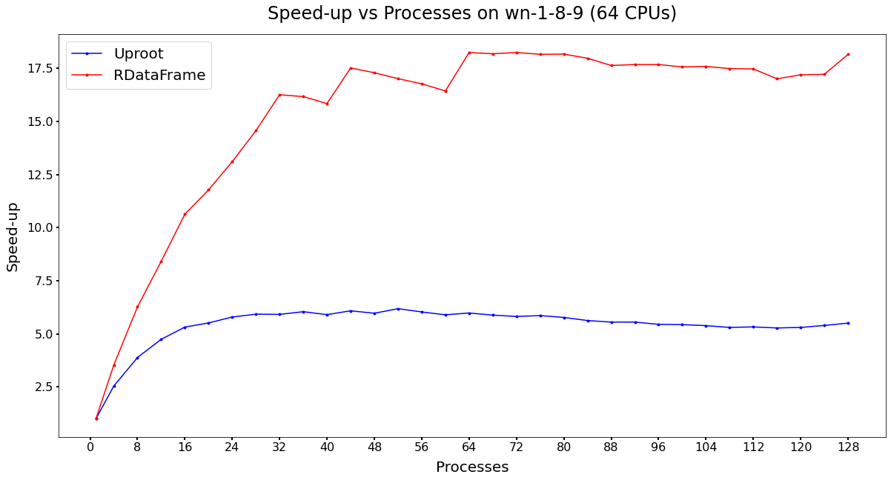
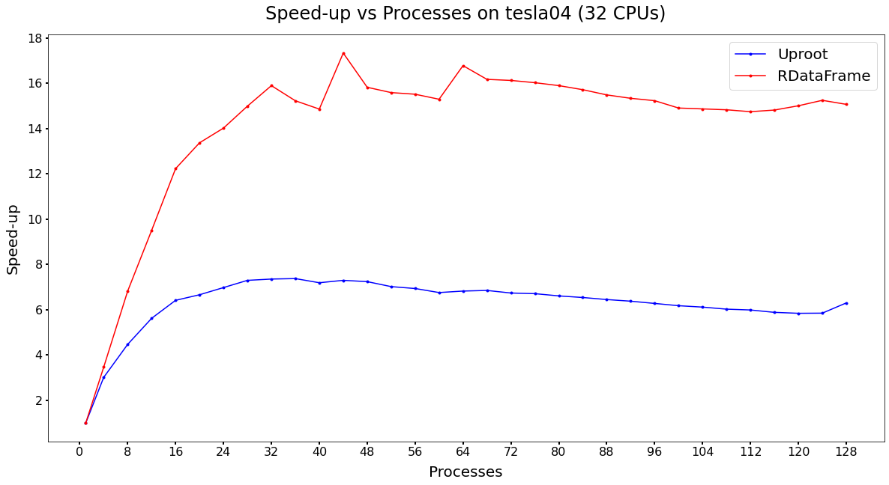
From the plots, it can be observed that we gained a significant performance boost with both Uproot and
RDataFrame by implementing parallel processing. On the machine wn-gpu-8-3-22, for instance, Uproot with
multiprocessing could be almost 9 times faster than normal. In the case of RDataFrame, we achieved an even more
striking speed-up: at 128 subprocesses, it was over 50 times faster than without parallelism.
Expectedly, we didn’t gain anything when we
created more subprocesses than the number of CPUs on the machine. This was clearly visible on wn-1-8-9 and
tesla04, which have 64 and 32 CPUs, respectively. With Uproot, however, the performance boost peaked at around
32 processes, no matter how many CPUs we had. This was because for Uproot, C(S, P) was large, and as a result,
it
dominated the speed-up gained by creating
more processes. In the case of RDataFrame, C(S, P) is relatively insignificant, so we gained performance boost
until the maximum number of CPUs is reached.
Results - Runtime vs Size
By keeping the number
of processes constant (at 32 or 64) and varying the size of data, we
obtained the following results:
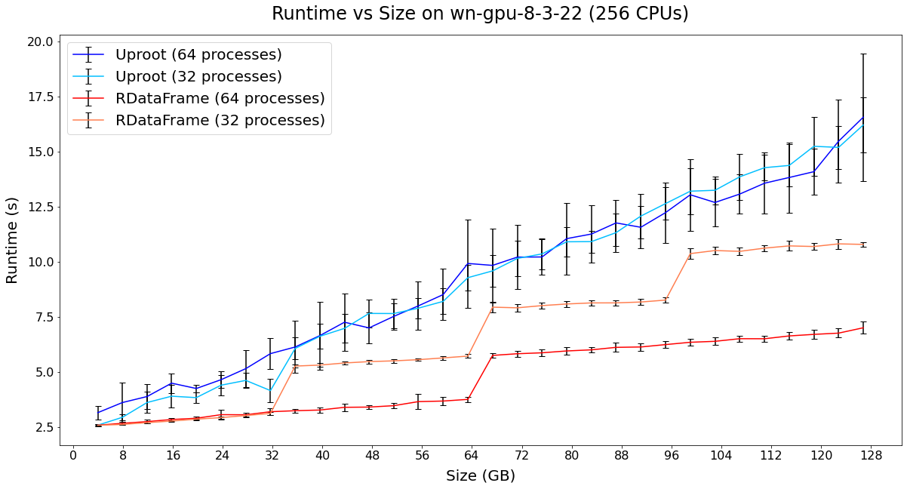
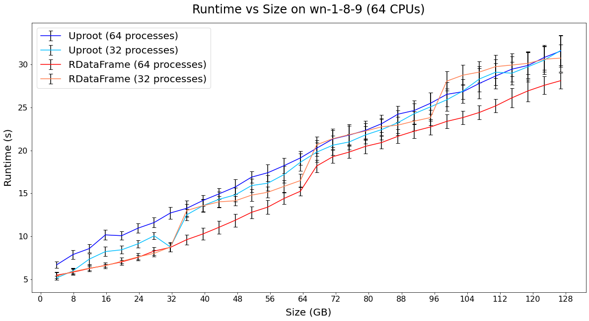
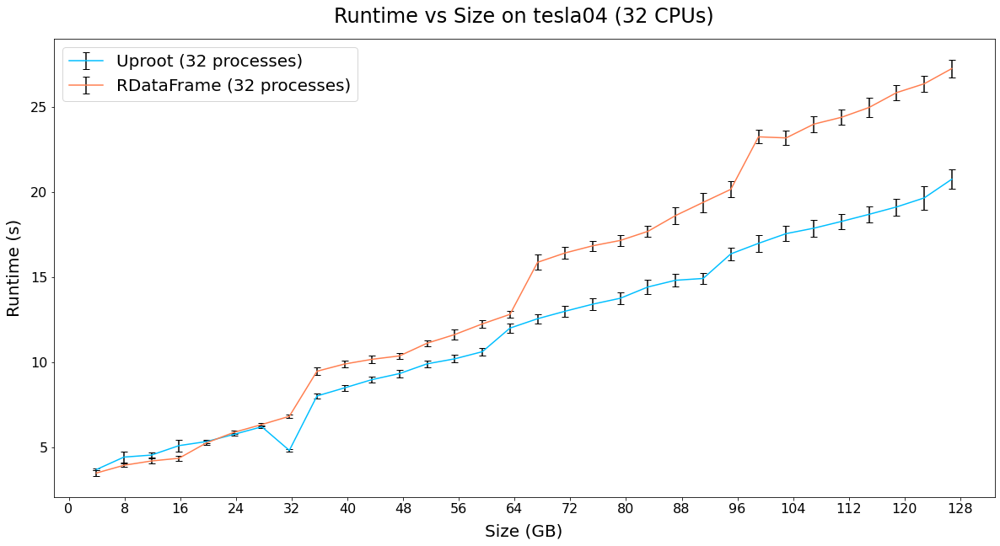
The plots show that the total runtime is linearly proportional to the size of data, which is what we expected.
In RDataFrame's curves, a step-like pattern is observed, which again reflects that with our approach, RDataFrame
parallelized over files instead of events.
Conclusion
By enabling parallelism, we effectively optimized the performance of both Uproot and RDataFrame. While Uproot
ran faster at fewer processes, RDataFrame got better performance as the number of processes increased. This may
suggest that on machines with a lot of CPUs, it is more beneficial to use the latter. However, we must keep in
mind that RDataFrame was able to reach such a great performance because the original dataset was divided into
many small files with the same number of events. In real-life situations, such condition is not guaranteed, so
Uproot may still be the better choice.